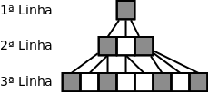

Para efeitos da nota atribuida à resolução de exercícios ao longo do semestre - Submeter até 23:59 de 13 de Novembro
(o problema continuará depois disponível para submissão, mas sem contar para a nota)
[para perceber o contexto do problema deve ler o guião da aula #03]
Como sabes desde a qualificação, a Sara adora o seu caderno quadriculado e arranja todo o tipo de maneiras de passar tempo com ele. Desta vez resolveu começar a pintar com o seu lápis algumas quadrículas. A partir da maneira como preenche uma linha do caderno, ela faz as seguintes transformações a cada quadrícula:
A Sara começa por pintar na primeira linha apenas uma quadrícula. A partir daí pinta nas linhas sucessivas usando as regras indicadas. A figura seguinte ilustra a maneira como ficariam as 3 primeiras linhas do caderno:

A Sara achou que o caderno estava a ficar com um padrão muito bonito! Como adora contar, resolveu selecionar uma parte de uma das linhas e contar quantas quadrículas estão pintadas. Por exemplo, entre a 3ª e a 7ª posição da 3ª linha existem duas quadrículas pintadas:
A Sara rapidamente percebeu que ia dar muito trabalho contar quadrículas para as linhas seguintes e precisa da tua ajuda!
Sabendo que a Sara usa as regras atrás descritas começando com uma única quadrícula pintada na primeira linha, a tua tarefa é responder a vários pedidos de contagens, cada um deles no seguinte formato: na linha nº Ki, quantas quadrículas estão pintadas entre as posições Ai e Bi (inclusive)?
Na primeira linha vem um único inteiro P indicando o número de perguntas que se seguem. Cada uma das P linhas seguintes contém três inteiros Ki Ai Bi indicando o intervalo [Ai,Bi] da linha nº Ki. É garantido que as posições são válidas para a linha em questão, ou seja, não saem dos seus limites.
O output deve conter P linhas, uma para cada pergunta, indicando o número de quadrículas pintadas entre as posições Ai e Bi da Ki-ésima linha do caderno
São garantidos os seguintes limites em todos os casos de teste que irão ser colocados ao programa:
| 1 ≤ P ≤ 1 000 | Número de perguntas | |
| 1 ≤ K ≤ 1 000 | Linha do caderno quadriculado | |
| 1 ≤ Ai ≤ Bi ≤ 1016 | Posições na linha do caderno quadriculado |
Nota que para ler um número da ordem de 1016 são necessários 64 bits, ou seja, deves usar o long long de C/C++ ou o long de Java.
Os casos de teste deste problema estão organizados em 5 grupos com restrições adicionais diferentes:
| Grupo | Nº de Pontos | Restrições adicionais |
|---|---|---|
| 1 | 10 | Ai ≤ Bi ≤ 1000, Ki ≤ 9 |
| 2 | 20 | Ai ≤ Bi ≤ 107, Bi - Ai ≤ 1000 |
| 3 | 20 | Ai ≤ Bi ≤ 107 |
| 4 | 25 | Bi - Ai ≤ 1000 |
| 5 | 25 | (nenhuma restrição adicional) |
5 3 3 7 3 1 8 2 1 1 5 27 41 4 9 12
2 4 1 5 0
A seguir são mostrados os segmentos correspondentes a cada uma das perguntas: